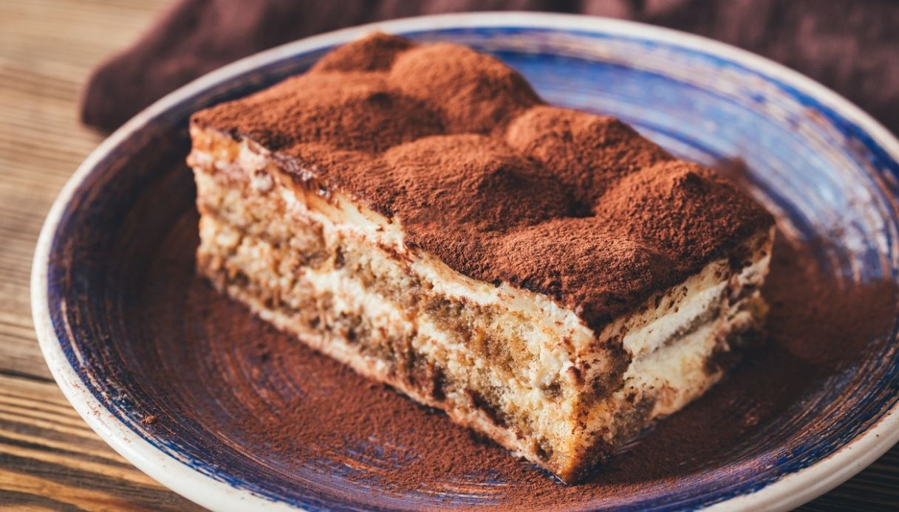

Tiramisù

Description
Tiramisu is an italian dessert, its origin is disputed between the italian
regions of Veneto and Friuli-Venezia Giulia.
The name come from the italian "tirami su" (pick me up or cheer me up).
Tiramisu appears to have been invented in the late 1960s or early 1970s,
but where and when exactly is unclear. Some believe the recipe was modeled
after sbatudin, a simpler dessert made of egg yolks and sugar. Others
argue it originated from another dish, dolce Torino.
Ingredients
- 400ml double cream
- 250g mascarpone
- 75ml marsala
- 5 tbsp golden caster sugar
-
300ml coffee, made with 2 tbsp coffee granules and 300ml boiling water
- 175g sponge fingers
- 25g dark chocolate
- 2tsp cocoa powder
Steps
-
Put the double cream, mascarpone, marsala and golden caster sugar in a
large bowl.
-
Whisk until the cream and mascarpone have completely combined and have
the consistency of thickly whipped cream.
-
Pour the coffee into a shallow dish. Dip in a few of the sponge fingers
at a time, turning for a few seconds until they are nicely soaked, but
not soggy. Layer these in a dish until you’ve used half the sponge
fingers, then spread over half of the creamy mixture.
-
Using the coarse side of the grater, grate over most of the dark
chocolate. Then repeat the layers (you should use up all the coffee),
finishing with the creamy layer.
-
Cover and chill for a few hours or overnight. Will keep in the fridge
for up to two days.
-
To serve, dust with the cocoa powder and grate over the remainder of the
chocolate.